Ted Brewer GWDS final project
Hi there, I'm ted and this is the work I did over the last semester.
in this section we looked at showing different design tecniques
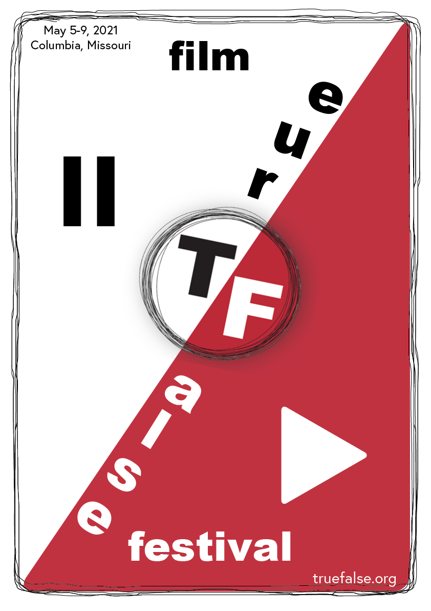 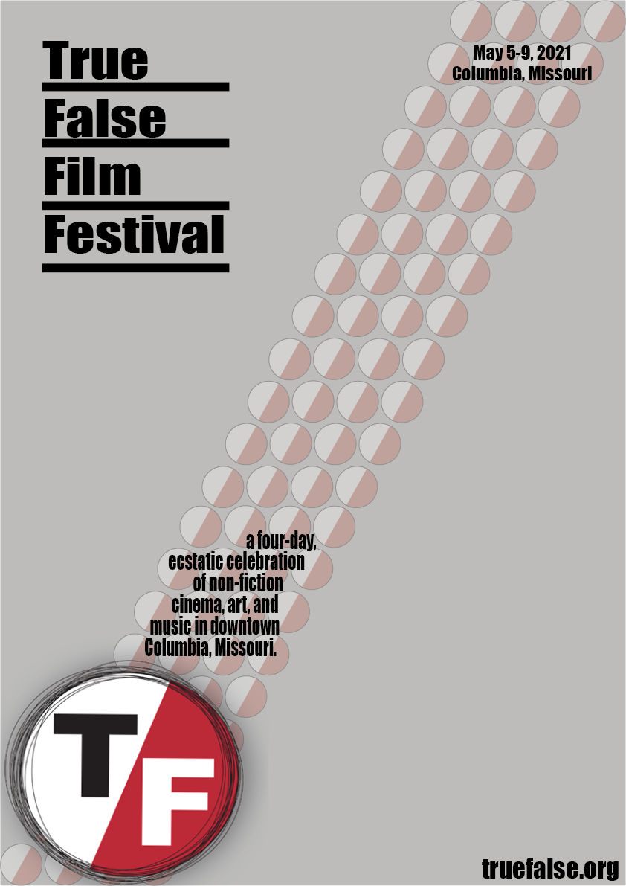this is my typography section
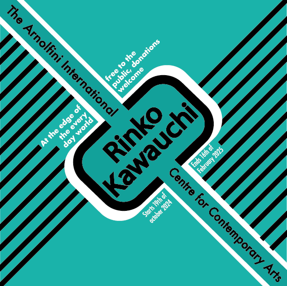 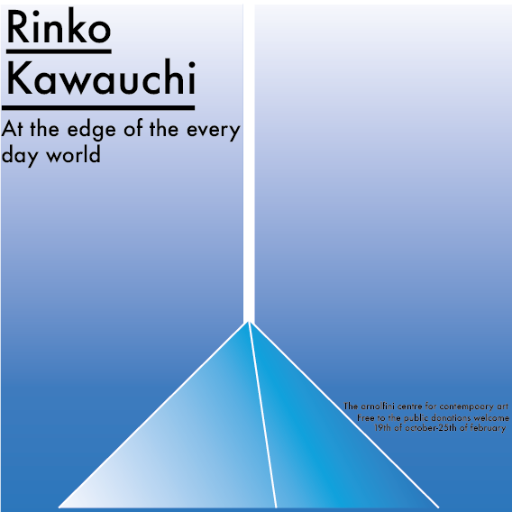 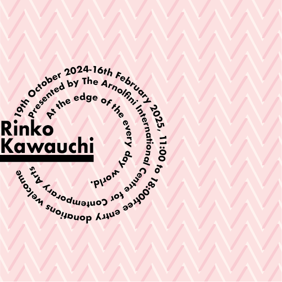 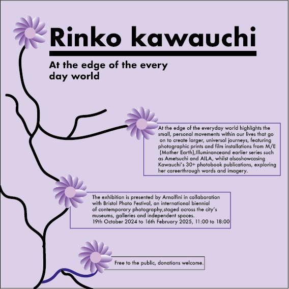 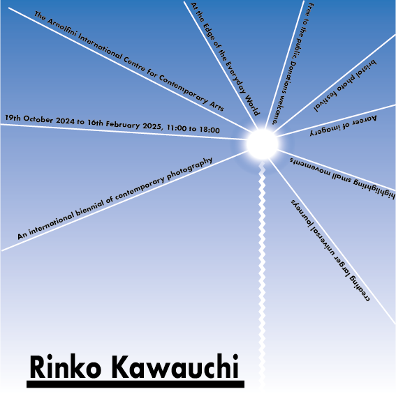 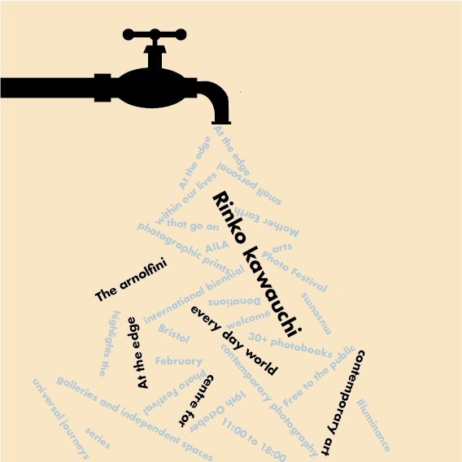 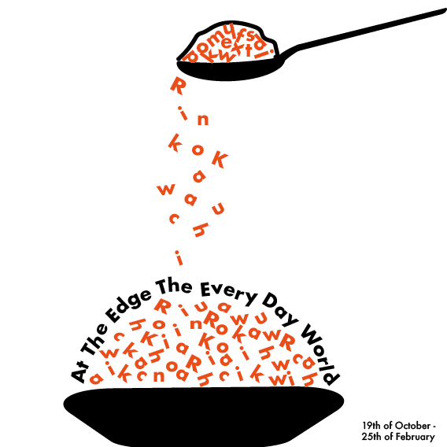Hi there, I'm ted and this is the work I did over the last semester.
in this section we looked at showing different design tecniques
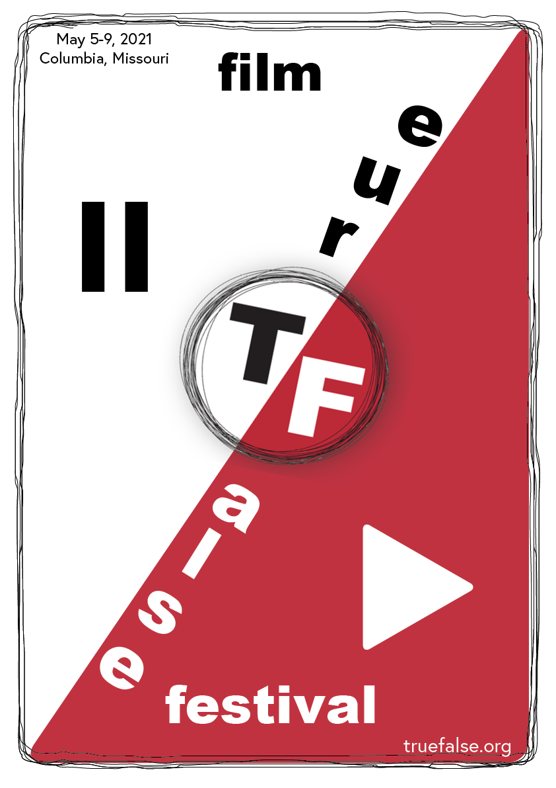 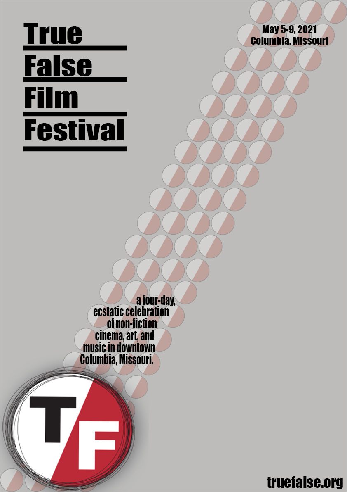this is my typography section
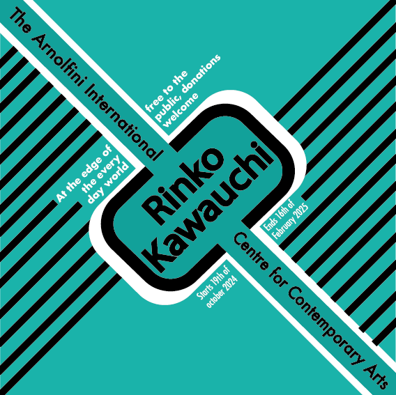 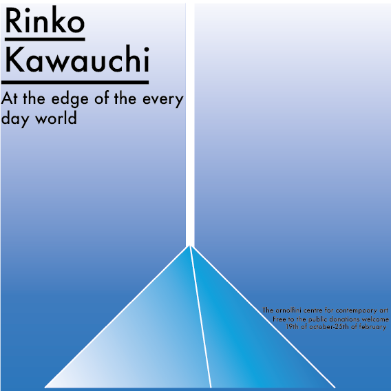 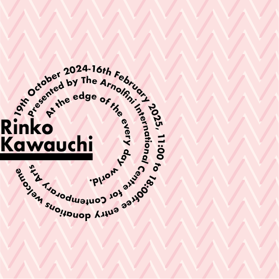 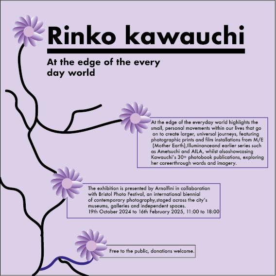 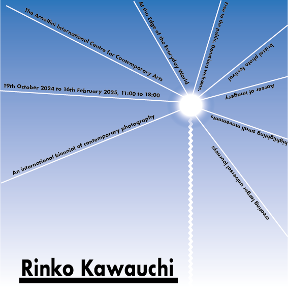 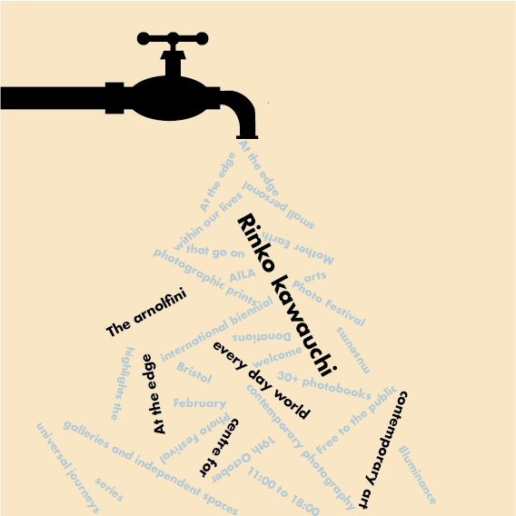 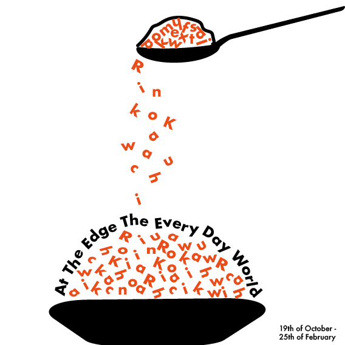